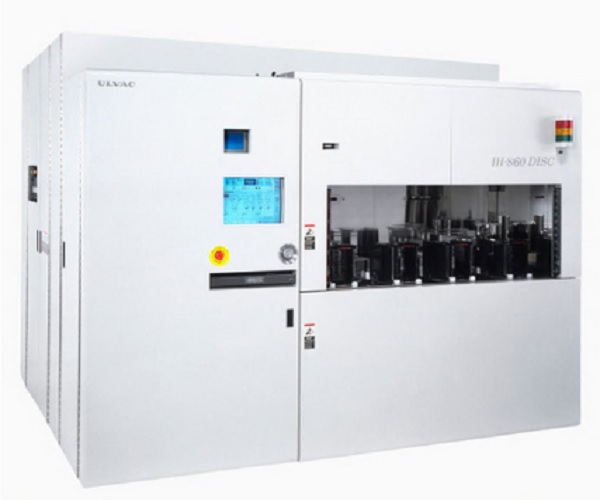
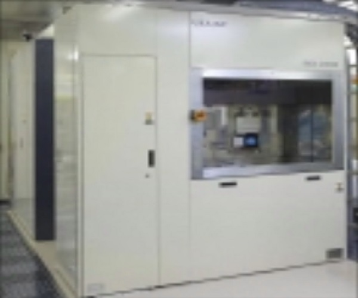
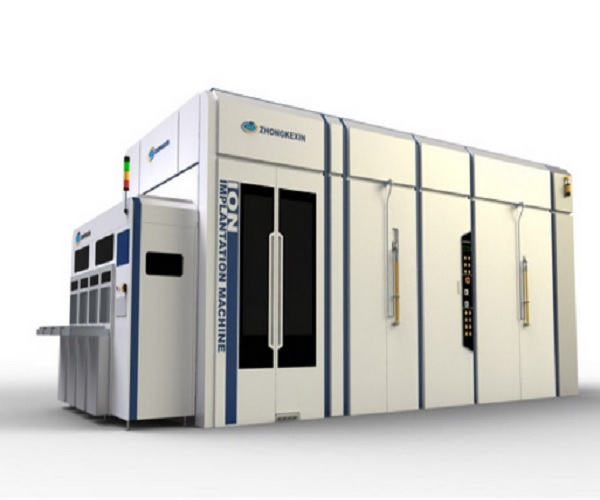
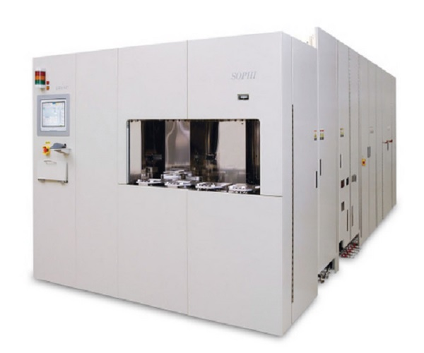
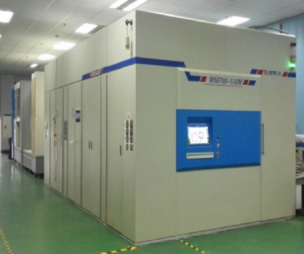
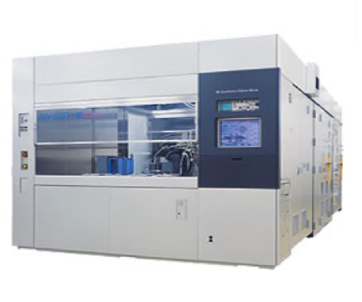
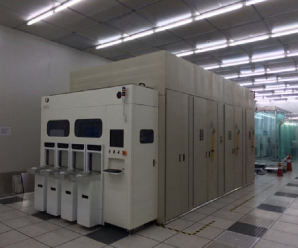

<!DOCTYPE html>
<html lang="ru">
  <head>
    <meta charset="utf-8">
    <meta http-equiv="X-UA-Compatible" content="IE=edge"> <!--для интерет Explorer-->
    <meta name="viewport" content="width=device-width, initial-scale=1"> <!--для корректного изображения в мобильных устройствах-->
    <!-- The above 3 meta tags *must* come first in the head; any other head content must come *after* these tags -->
    <title>Каталог ПТО</title>
    <style>
    p.cite { /* Абзац с классом cite */
    color: navy; /* Синий цвет текста */
    margin-left: 15px; /* Отступ слева */
    border-left: 1px solid navy; /* Граница слева от текста */
    padding-left: 12px; /* Расстояние от линии до текста */
    } 
  </style>
    <!-- Bootstrap -->
    <link href="assets/css/bootstrap.min.css" rel="stylesheet">    <!--для подключения скаченного Bootstrap-->
    
     <link href="assets/css/style.css" rel="stylesheet">    <!--для подключения style.css-->

    <!-- HTML5 shim and Respond.js for IE8 support of HTML5 elements and media queries -->
    <!-- WARNING: Respond.js doesn't work if you view the page via file:// -->
    <!--[if lt IE 9]>
      <script src="https://oss.maxcdn.com/html5shiv/3.7.3/html5shiv.min.js"></script>
      <script src="https://oss.maxcdn.com/respond/1.4.2/respond.min.js"></script>
    <![endif]-->
  </head>
  <body style="background-color: aliceblue">

   <div class="container-fluid" >                                     <!-- style="background-color: red; height: 100px">-->
       <div class="row">
         <nav role="navigation" class="navbar navbar-inverse">
             <div class="container">
                <div class="navbar-header header">
                   <div class="container">
                       <div class="row">
                           <div class="col-lg-12">
                               <h1><a href="#">Каталог производственно-технологического и испытательного оборудования рекомендуемого к приобретению</a></h1>
                               <p>Изготовление электронных компонентов электрофизическими методами</p>
                           </div>
                       </div>
                   </div>
                    <button type="button" data-target="#navbarCollapse" data-toggle="collapse" class="navbar-toggle">
                        <span class="sr-only">Toggle navigation</span>
                        <span class="icon-bar"></span>
                        <span class="icon-bar"></span>
                        <span class="icon-bar"></span>
                    </button>
                </div>
                
                 <div id="navbarCollapse" class="collapse navbar-collapse navbar-right">
                     <ul class="nav nav-pills"> <!--nav-pills для выравнивания по горизонтали-->
                         <li><a href="index.html">Технологические переделы</a> </li>
                         <li><a href="proizvoditeli.html">Производители оборудования</a></li>
                         <li><a href="peredel_mex.html">Комплексные решения</a></li>
                     </ul>
                 </div>
             </div>
         </nav>
        </div>
   </div>
      <div class="wrapper">    <!-- основной блок>-->             
        <div class="container">
            <div class="row">
                <div class="col-lg-12">                      
                    <h3>Ионная имплантация</h3>                                       
                    <table class="table table-striped">
                        <div class="row"> 
                            <thear>
                                <tr>
                                    <th class="col-lg-2 col-md-2 col-xs-2 hidden-xs"></th>
                                    <th class="vert-align">Модель обрудования</th> 
                                    <th class="text-center vert-align">Наибольший диаметр подложки, мм</th>
                                    <th class="text-center vert-align">Изготовитель</th>
                                </tr>
                            </thear>
                            <tbody>  
                                   <tr>
                                         <td class="col-lg-2 col-md-2 col-xs-2 hidden-xs">
                                         
                                         </td>
                                         <td class="vert-align">
                                        <a href="https://ostec-micro.ru/catalog/equipment/do-200kev/sistema-ionnoy-implantatsii-ulvac-ih-860/" target = "_blank">Установка ионной имплантации<br>Ulvac IH-860</a> 
                                         </td>
                                         <td class="text-center vert-align">150</td>
                                         <td class="text-center vert-align">Ulvac (Япония)</td>
                                    </tr> 
                                    <tr>
                                         <td class="col-lg-2 col-md-2 col-xs-2 hidden-xs">
                                         
                                         </td>
                                         <td class="vert-align">
                                        <a href="https://ostec-micro.ru/catalog/equipment/do-200kev/sistema-ionnoy-implantatsii-ulvac-imx-3500/" target = "_blank">Установка ионной имплантации<br>Ulvac IMX-3500</a> 
                                         </td>
                                         <td class="text-center vert-align">150</td>
                                         <td class="text-center vert-align">Ulvac (Япония)</td>
                                    </tr> 
                                    <tr>
                                         <td class="col-lg-2 col-md-2 col-xs-2 hidden-xs">
                                         
                                         </td>
                                         <td class="vert-align">
                                        <a href="http://eav.su/catalog/mikroehlektronika-oborudovanie-pribory-ustanovka/tekhnologicheskoe-oborudovanie/ionnaya-implantaciya/ionnyj-implanter-imx-3500/" target = "_blank">Установка ионной имплантации<br>IMX-3500</a> 
                                         </td>
                                         <td class="text-center vert-align">150</td>
                                         <td class="text-center vert-align">ULVAC (Япония)</td>
                                    </tr>
                                    <tr>
                                         <td class="col-lg-2 col-md-2 col-xs-2 hidden-xs">
                                         
                                         </td>
                                         <td class="vert-align">
                                        <a href="https://ostec-micro.ru/catalog/equipment/do-200kev/sistema-ionnoy-implantatsii-cetc-m56700-1-um/" target = "_blank">Установка ионной имплантации<br>CETC M56700-1/UM</a> 
                                         </td>
                                         <td class="text-center vert-align">150</td>
                                         <td class="text-center vert-align">CETC (Китай)</td>
                                    </tr> 
                                    <tr>
                                         <td class="col-lg-2 col-md-2 col-xs-2 hidden-xs">
                                         
                                         </td>
                                         <td class="vert-align">
                                        <a href="https://ostec-micro.ru/catalog/equipment/do-200kev/sistema-ionnoy-implantatsii-ulvac-sophi-200-260/" target = "_blank">Установка ионной имплантации<br>Ulvac SOPHI 200/260</a> 
                                         </td>
                                         <td class="text-center vert-align">200</td>
                                         <td class="text-center vert-align">Ulvac (Япония)</td>
                                    </tr>
                                     <tr>
                                         <td class="col-lg-2 col-md-2 col-xs-2 hidden-xs">
                                         
                                         </td>
                                         <td class="vert-align">
                                        <a href="https://ostec-micro.ru/catalog/equipment/do-200kev/sistema-ionnoy-implantatsii-cetc-m58200-1-um/" target = "_blank">Установка ионной имплантации<br>CETC M58200-1/UM</a> 
                                         </td>
                                         <td class="text-center vert-align">200</td>
                                         <td class="text-center vert-align">CETC (Китай)</td>
                                    </tr>     
                                    <tr>
                                         <td class="col-lg-2 col-md-2 col-xs-2 hidden-xs">
                                         
                                         </td>
                                         <td class="vert-align">
                                        <a href="https://www.dipaul.ru/catalog/ionnaya-implantatsiya/ustanovka-ionnoy-implantatsii/" target = "_blank">Установка ионной имплантации<br></a> 
                                         </td>
                                         <td class="text-center vert-align">300</td>
                                         <td class="text-center vert-align">SPS Europe (Нидерланды)</td>
                                    </tr>
                                          <tr>
                                         <td class="col-lg-2 col-md-2 col-xs-2 hidden-xs">
                                         
                                         </td>
                                         <td class="vert-align">
                                        <a href="https://ostec-micro.ru/catalog/equipment/do-200kev/sistema-ionnoy-implantatsii-cetc-m5525-300/" target = "_blank">Установка ионной имплантации<br>CETC M5525-300</a> 
                                         </td>
                                         <td class="text-center vert-align">300</td>
                                         <td class="text-center vert-align">CETC (Китай)</td>
                                    </tr>   
                                          <tr>
                                         <td class="col-lg-2 col-md-2 col-xs-2 hidden-xs">
                                         
                                         </td>
                                         <td class="vert-align">
                                        <a href="https://ostec-micro.ru/catalog/equipment/do-200kev/sistema-ionnoy-implantatsii-cetc-m561000-1-mu/" target = "_blank">Установка ионной имплантации<br>CETC M561000-1/UM</a> 
                                         </td>
                                         <td class="text-center vert-align">300</td>
                                         <td class="text-center vert-align">CETC (Китай)</td>
                                    </tr>                             
                             </tbody>
                        </div> 
                     </table>
                  <p align="justify" class="cite">          <i>Ионная имплантация</i> - метод легирования поверхностных слоев, заключающийся в обработке поверхности потоком высокоэнергетичных ионов и внедрении их в объеме материала.<br>
 Обработка поверхности ионами позаоляет снизить дозу облучения для получения такого же эффекта, значительно интенсифицировать процессы генерации радиационных повреждений и сократить, таким образом, продолжительность исследований по выбору радиационно-стойких материалов.

Ионная имплантация характеризуется следующими основными преимуществами:

1) отсутствие термодинамических ограничений по составу образующихся в поверхностных слоях сплавов и химических соединений. Используя ионную имплантацию, принципиально возможно получение систем сложного состава с любым сочетанием компонентов;

2) при ионной имплантации формируются неравновесные метастабильные структуры, которые в ряде случаев имеют уникальные физико-механические свойства. Данная особенность обусловлена тем, что процессы структурообразования протекают в условиях очень быстрого охлаждения (скорость охлаждения может достигать значений ~106 К/c);

3) универсальность и гибкость процесса; методом ионной имплантации удается получить слои с необходимым профилем концентраций легирующих элементов, структурным состоянием. Часто для регулирования характера распределения имплантированных атомов в поверхностном слое используется дополнительная термообработка;

4) высокая чистота процесса (процесс осуществляется в высоком вакууме); высокая автоматизация; широкие возможности в управлении ионным пучком, возможность локальной обработки;

5) возможность осуществления процесса при различных условиях и режимах, в том числе и при относительно низкой температуре поверхности;

6) возможность создания поверхностных слоев с высокими физико-механическими свойствами, которые трудно или даже невозможно получить другими методами обработки.

К основным недостаткам процесса ионной имплантации можно отнести:

1) образование в поверхностных слоях высокой концентрации дефектов. При высокой дозе облучения образуются даже аморфные слои. Для устранения дефектности проводят термическую обработку, в частности, кратковременный отжиг при температуре 400…700 0С;

2) относительно сложное технологическое оборудование и низкая производительность процесса обработки.

1.2 Физические основы метода

Процесс ионной имплантации и состояние модифицированных слоев характеризуются следующими основными параметрами, изменение которых оказывает определяющее влияние на свойства обрабатываемых поверхностей:

1) Распределение внедренных атомов по толщине. Оно зависит от энергии ионов, природы материала подложки, температуры поверхности. Для регулирования профиля распределения плотности легирующих атомов, как уже отмечалось, используется дополнительная термообработка.

2) Максимальная допустимая доза легирования - количество ионов, внедренных на единице поверхности обрабатываемой детали. Как правило, эта доза находится в пределах D = 1016…1018 ион/см2.

3) Параметры, характеризующие взаимодействие ионов с атомами поверхностного слоя (скорость образования дефектов, характер и структура образующихся химических соединений и т. д.).

4) Параметры, определяющие изменения структуры и свойств легированных слоев в зависимости от дозы облучения, плотности радиационных дефектов и т.д.

Основной характеристикой степени обработки при ионной имплантации является распределение имплантированных ионов по толщине поверхностного слоя. При взаимодействии иона с поверхностью в процессе многократных столкновений с атомами мишени происходит передача кинетической энергии, и в итоге ион, внедрившийся на некоторое расстояние от поверхности, теряет эту энергию полностью. Для характеристики этого процесса используют следующие параметры: пробег иона R - это путь, который проходит ион до полной потери кинетической энергии (на основании экспериментальных данных этот параметр определить сложно); проекцию пробега иона Rx - расстояние, на которое внедрился ион от поверхности (рисунок 9.1).

Рисунок 9.1 - Схема взаимодействия иона с атомами мишени

Проекция пробега иона Rx экспериментально определяются достаточно просто, используя, например, методы масс-спектроскопии. Для характеристики взаимодействия большого числа ионов с поверхностью используют функцию распределения плотности имплантированных атомов по толщине слоя dN/dx (dN - число имплантированных атомов, находящихся на расстоянии x от поверхности в слое толщиной dx) (рисунок 9.2).

Рисунок 9.2 - Характерные функции распределения плотности имплантированных атомов по толщине слоя: 1-при энергии ионов Е1; 2 -при энергии ионов Е2

(Е2 >Е1)

В общем случае функция dN/dx зависит от соотношения масс атомов поверхности и ионов, энергии иона, структуры поверхностного слоя (типа кристаллической решетки). Она чувствительна к протяженным дефектам, зависит от температуры и структурных характеристик поверхностного слоя.

Рассмотрим влияние энергии ионов на процессы энергообмена при их столкновении с атомами мишени. При движении ионов в объеме поверхностного слоя различают два вида потерь энергии:

- Потери энергии при взаимодействии с электронами в свободном или связанном состоянии. Этот вид взаимодействия характеризуется Sе - коэффициентом электронной составляющей торможения.

- Потери энергии при взаимодействии с ядрами. Этот вид потери учитывает параметр Sя - ядерная составляющая процесса торможения.

В общем случае, изменение энергии иона dE при прохождении им расстояния dx может быть оценено с помощью выражения

где N - концентрация атомов мишени.

Отсюда

Тогда проекция пробега

(9.1)

Известно, что ядерная составляющая процесса торможения Sя практически не зависит от энергии ионов. Электронная составляющая прямо пропорциональна скорости иона (рисунок 9.3):

Se = a V = k E0,5

(а и k - постоянные для данного иона и материала мишени коэффициенты).


Рисунок 9.3 - Зависимость ядерной (1) и электронной (2) составляющих процесса торможения от энергии иона

Как видно из рис. 9.3, при энергии иона Е = Ек ядерная и электронная составляющие равны (Se=Sя). Оценки показывают, что для металлов

Ек=103…104 эВ.

При анализе (9.1) рассмотрим характерные случаи.

1. Обработка поверхности ионами, имеющими низкую энергию (ЕЕк). В этом случае основным процессом, определяющим торможение ионов, является рассеивание на ядрах. Тогда SяSе и из (9.1) следует, что RxЕ.

2. Воздействие на поверхность высокоэнергетичных ионов (ЕЕк). Тогда SяSе и достаточно точно проекционный пробег может быть определен с помощью соотношения

Rx=5Е0,5йййй (9.2)

Отметим, что второй случай является весьма характерным для практических приложений, и выражение (9.2) часто используется при проведении предварительных расчетов. Так, например, при обработке ионами с энергией Е=106 эВ (или Е=16.10-14Дж) глубина внедрения ионов Rx= 2 мкм.

Из данного рассмотрения следует, что при внедрении ионов низких энергий преобладают процессы взаимодействия с ядрами (SяSе) и радиационные дефекты (вакансии и межузельные атомы) образуются вдоль всей траектории движения ионов. Если же имеет место обработка ионами высоких энергий, то радиационные дефекты образуются только в конце пробега ионов, когда ионы имеют достаточно низкую энергию.

Как правило, при обработке ионами средней энергии максимум концентрации имплантированных атомов приходится на расстояние 0,1…0,8 мкм от поверхности. Концентрация легирующих элементов в этом слое может достигать 1…30 %.

Оборудование, использующееся для ионной имплантации, как уже отмечалось, является довольно сложным и включает следующие основные блоки: источник ионов; системы ускорения, фокусировки и сепарации ионов; системы крепления и вращения детали (рисунок 9.4).

Рисунок 9.4 - Принципиальная схема установки для ионной имплантации: 1-камера ионизации; 2-ускоряющие и фокусирующие линзы; 3-система сепарации ионов; 4-мишень; 5-система нагрева мишени; 6-поток ионов

В рабочей камере создается достаточно низкое давление (Р= 10-5…10-4 Па), и с помощью источника ионов, фокусирующей и ускоряющих линз, системы сепарации формируется направленный поток высокоэнергетичных ионов. Обрабатываемая мишень предварительно нагревается и помещается в зоне действия ионного потока.

Разработаны установки, позволяющие получать потоки ионов с плотностью тока 100 мкА/см2 (общий ток до 5 мА) и энергией ионов 20…200 кэВ. Диаметр пучка ионов достигает 1…2 см. В процессе обработки деталь нагревают до 600 0С. Нагрев может быть осуществлен с помощью резистивных элементов или же производится в процессе обработки под действием пучка ионов. Рекомендуемая оптимальная доза обработки составляет D ~ 1017 ион/см2.

1.3 Структура и свойства имплантированных слоев

Поверхностные слои, обработанные методом ионной имплантации, характеризуются, прежде всего, высокой дефектностью. При взаимодействии ионов с атомами мишени происходит смещение последних, и образуются межузельные атомы и вакансии. Если мощность ионного потока и энергия высоки, то наблюдается возникновение вакансионных кластеров, т. е. скоплений дефектов. При этом профиль распределения дефектов по толщине схож с профилем распределения по толщине имплантированных атомов, т.е. максимум дефектов образуется на некотором расстоянии от поверхности и при увеличении энергии ионов этот максимум смещается в глубь материала. Отметим, однако, что максимум дефектов находится ближе к поверхности по сравнению с положением максимума имплантированных ионов.

При высоких значениях плотности дефектов в поверхностных слоях могут образовываться аморфные области, в которых плотность дефектов настолько велика, что нарушается дальний порядок. Дефекты могут вызывать скопления атомов легирующих элементов, и в результате наблюдается образование фаз внедрения. При ионной обработке сплавов на границе дефектной области протекают процессы сегрегации, приводящие к его расслаиванию. При имплантации ионов гелия или аргона в металлические поверхности может происходить блистеринг, приводящий к разрушению поверхностных слоев.

Аморфизация поверхностного слоя, его легирование позволяют реализовать уникальное сочетание физико-механических свойств, в частности высокой твердости и пластичности одновременно. После ионной имплантации очень значительно возрастает коррозионная стойкость стали. Под действием ионной имплантации возможны существенные изменения в кристаллической решетке материала мишени, в ряде случаев в поверхностных слоях происходят полиморфные превращения.

При рассмотрении особенностей ионной имплантации выделяют три энергетических диапазона ионов:

- диапазон низких энергий, Е 100…1000 эВ;

- диапазон средних энергий, 104 Е106 эВ;

- диапазон высоких энергий, Е106 эВ.

Наиболее перспективно применение ионной имплантации средних энергий. Высокоэнергетическая имплантация требует применения дорогостоящего оборудования и, как правило, экономически невыгодна. Низкоэнергетическая имплантация может быть использована при обработке машиностроительных материалов только в сочетании с высокотемпературным отжигом. Отжиг проводится в вакууме с целью интенсификации диффузионных процессов.

На практике получили распространение следующие разновидности ионной имплантации.

1) Ионная имплантация атомами отдачи. В этом случае на поверхность обрабатываемой детали, как правило, методом испарения в вакууме наносится тонкое покрытие из легирующего элемента. При обработке покрытия первичными ионами происходит передача атомам покрытия кинетической энергии и внедрение их в поверхностный слой обрабатываемой детали. Одновременно идет частичное распыление покрытия. Данный метод универсален, т.к. с использованием ионов одного сорта, например, ионов инертного газа и покрытий из различных материалов предоставляется возможность легировать поверхностный слой различными элементами. Основной недостаток данного метода - необходимость постоянного восстановления покрытия из-за его распыления в процессе обработки.

2) Ионная имплантация в условиях ионного перемешивания. При реализации данного метода обработка поверхности ионами инертного газа и осаждение ионов легирующего элемента на поверхность детали происходят одновременно.

Разнообразие технологических приемов, используемых при ионной имплантации, позволяет в широких пределах изменять химический состав и структуру слоев. Основной особенностью ионной имплантации является то, что после её проведения практически не изменяются размеры детали и её можно применять после чистовой прецизионной обработки.

После ионной имплантации в поверхностном слое образуются напряжения сжатия, которые снижают тенденцию к возникновению и развитию трещин в поверхностных слоях, что также способствует повышению эксплуатационных свойств обработанных изделий.

При имплантации ионов азота и углерода в поверхностных слоях образуются карбиды и нитриды металлов, значительно повышающие твердость и износостойкость деталей. Одним из эффективных применений ионной имплантации является использование ее для получения антифрикционной керамики. Если необработанная керамика имеет коэффициент трения fтр=0,3...0,6, то после ионной имплантации -fтр=0,05...0,1. Для повышения сопротивления усталости рекомендуются следующие режимы ионной имплантации: доза облучения D=1017ион/см2, энергия ионов Е=100...200 кэВ, температура поверхности 200 0С.

Наибольшее распространение ионная имплантация получила при обработке режущего инструмента. Ее проведение позволяет повысить износостойкость в десятки раз. В Западной Европе 20...25 % выпускаемых пресс-форм подвергаются ионной имплантации. Обработка ионами азота и углерода ножей для резки резины, ленточных пил, винтов вертолетов, ответственных узлов реактивных двигателей позволяет повысить их долговечность в 10…80 раз.

Список использованных источников

1. Камаров Ф. Ф. Ионная имплантация в металлы. М.: Наука и техника, 1980. -164 с.

2. Белый А. В., Карпенко Г. Д., Мышкин Н. К. Структура и методы создания износостойких поверхностных слоев. М.: Наука и техника, 1991. -175 с.

3. Белый А. В., Кукареко В.А., Лободаева О. В., Таран И. И., Ших С. К. Ионно-лучевая обработка металлов, сплавов и керамических материалов. Мн.: Наука и техника, 1997. -185 с.

4. Научно-технический прогресс в машиностроении. Современные методы упрочнения поверхностей деталей машин/Под ред. Фролова К.В. -М.: Институт машиноведения АН СССР, 1989. - 286 С.

5. Белый А. В., Симонов А. В., Ших С. К. Применение ионного легирования для повышения эксплуатационных характеристик деталей машин и оборудования. Мн.: БелНИИТИ, 1985. - 44 с. </p>
                </div> 
            </div>
            </div> 
            <div class="clear"></div>
      </div>
      <footer>
        <div class="container">
            <p class="text-center"> <a href="https://www.tmnpo.ru/">ФГУП «НПО «Техномаш»</a></p>
        </div>
      </footer>

    <!-- jQuery (necessary for Bootstrap's JavaScript plugins) -->
    <script src="https://ajax.googleapis.com/ajax/libs/jquery/1.12.4/jquery.min.js"></script>
    <!-- Include all compiled plugins (below), or include individual files as needed -->
    <script src="assets/js/bootstrap.min.js"></script>
           
  </body>
</html>
